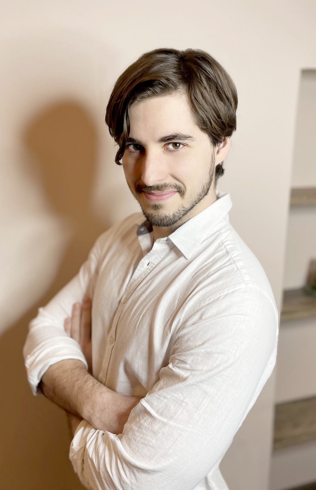
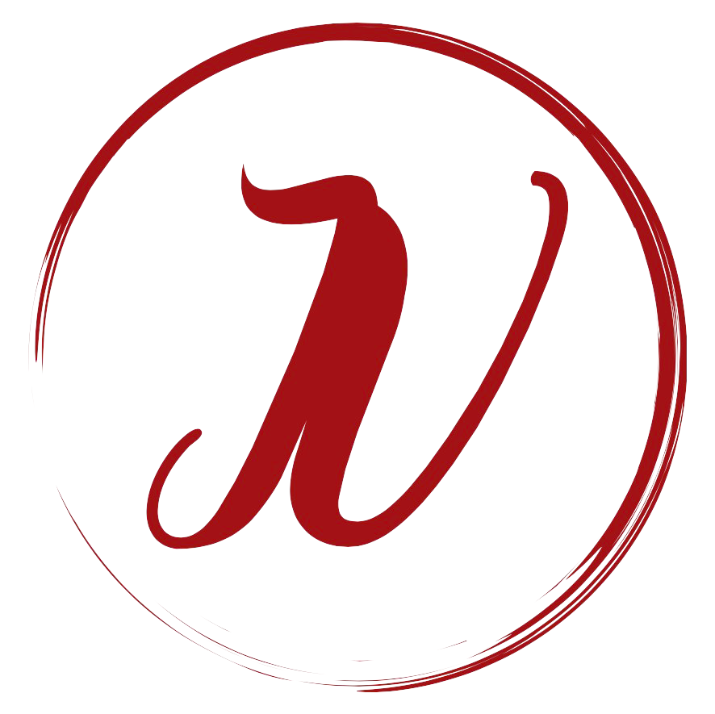

Moje cesta:
Tělo mě vždy fascinovalo a dá se říct, že se jím zabývám celý svůj život. Mimo zájem a
zkoumání
možností těla vlastního,
jsem vystudoval fyzioterapii v Plzni a získal magisterský
titul. To mi ale zdaleka nestačilo. Chtěl jsem o těle a jeho fungování vědět co nejvíc.
Hledání
souvislostí mě přivedlo k dalším terapeutickým metodám a sportovním, masérským či holistickým kurzů.

Za sebou mám například:
- Koordinačně zátěžová kinezioterapie - Rehaeduca
- Metoda Stecco (1, 2), fasciální manipulace - Rehaeduca u Lorenzo Copetti a Jullia Ann Day
- Metoda DNS - Centrum pohybové medicíny Pavla Koláře
- Metoda ACT, zapojení hlubokého stabilizačního systému skrze akra – Rehaspring u zakladatelky metody PhDr. Ingrid Palaščákové Špringrové
- Metoda Ludmily Mojžíšové – u Mgr. Jany Jedličkové a Hany Volejníkové.
- Kloubní mobilizace páteře a končetin – Centrum pohybové medicíny Pavla Koláře u Mgr. Maji Špiritović
- Instruktor fitness, posilování kloubní kondice - u fyzioterapeuta PaedDr. Petr Tlapáka
- Manuální lymfodrenáž – Dexter Akademy
- Metoda Neurac, cvičení se závěsným systémem REDCORD – Redpoint Clinic
- Terapie ruky a techniky dlahování - Česká společnost terapie ruky
- Instruktor nordick wallking – Mgr. Miroslava Míra.
- Dornova metoda – Eduspa Collage
- Výcvik vědomé práce s tělem - sexuolog Andrew Barnese
- Masáže: švédská, thajská, havajská, breussova, indická – hlavy, masáž chodidel, lávové kameny, energetická a jiné - Střední zdravotnická škola Cheb, Eduspa Collage, Dexter Akademi, Oriental Spa & Wellness